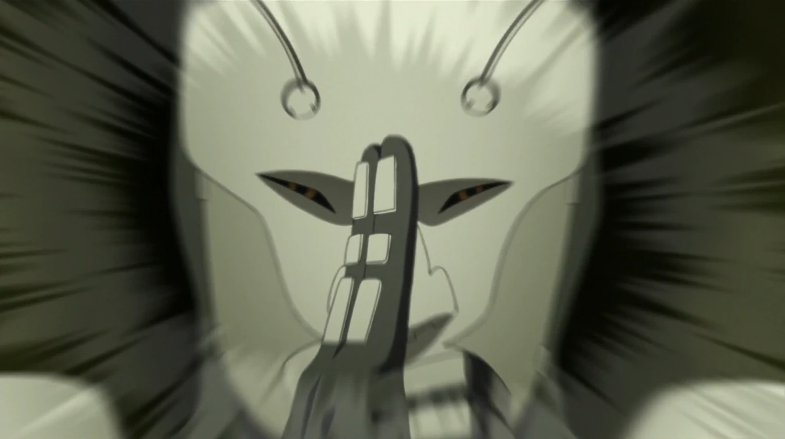
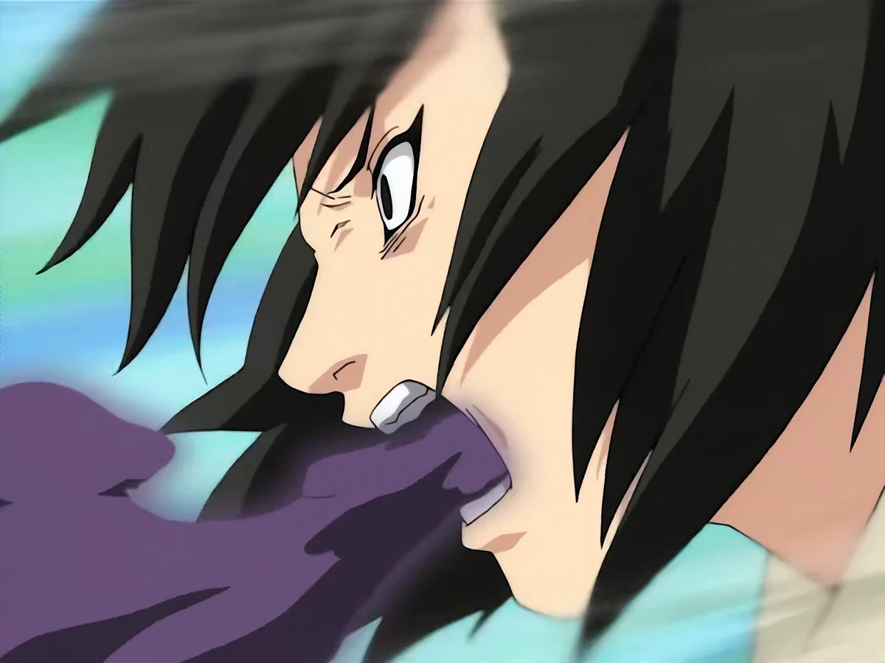
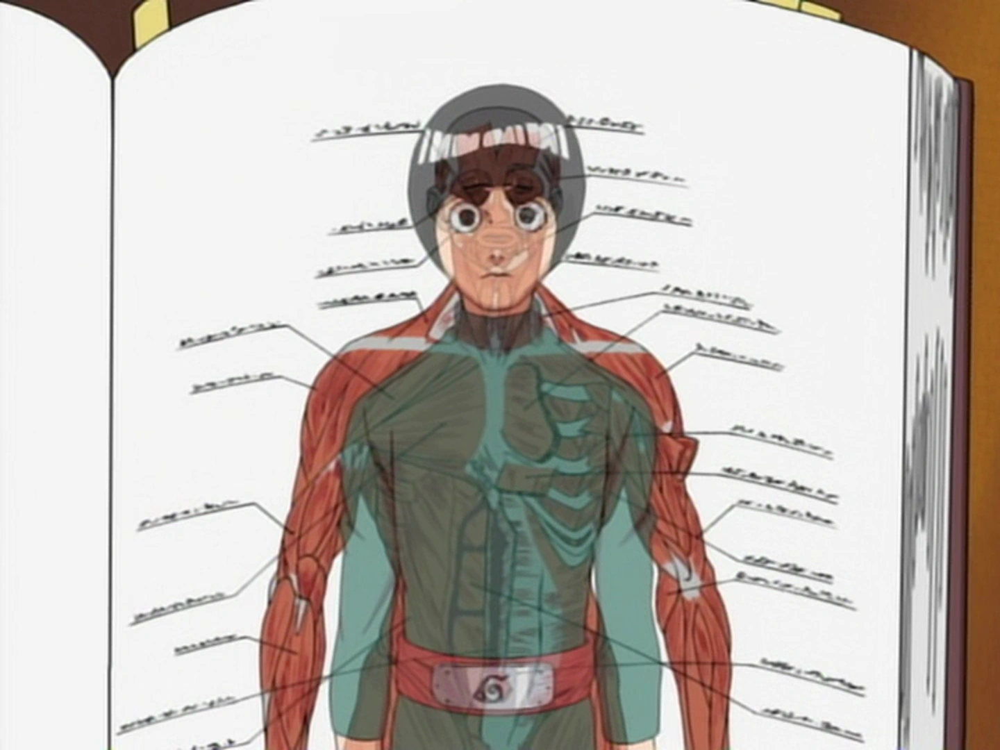
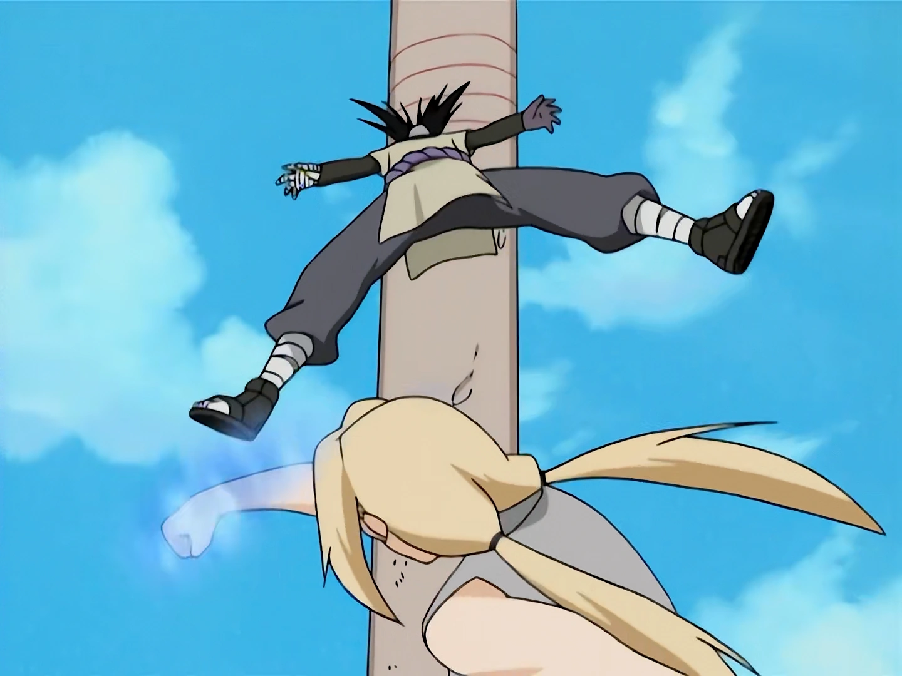
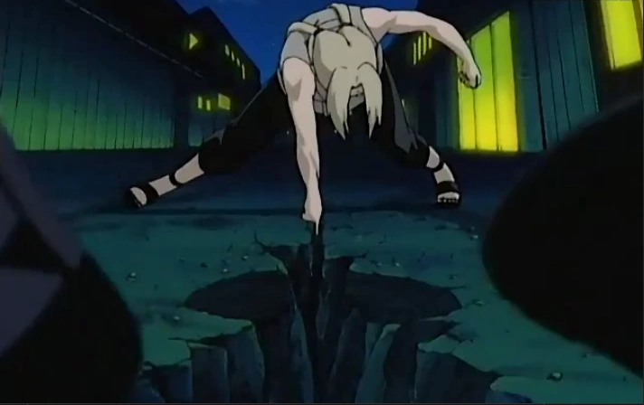
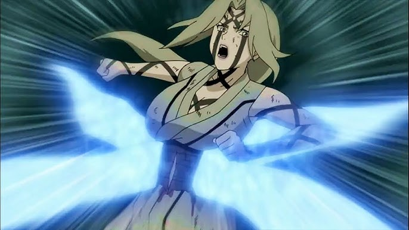
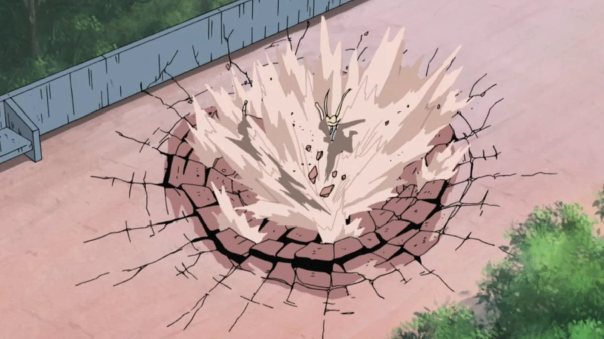
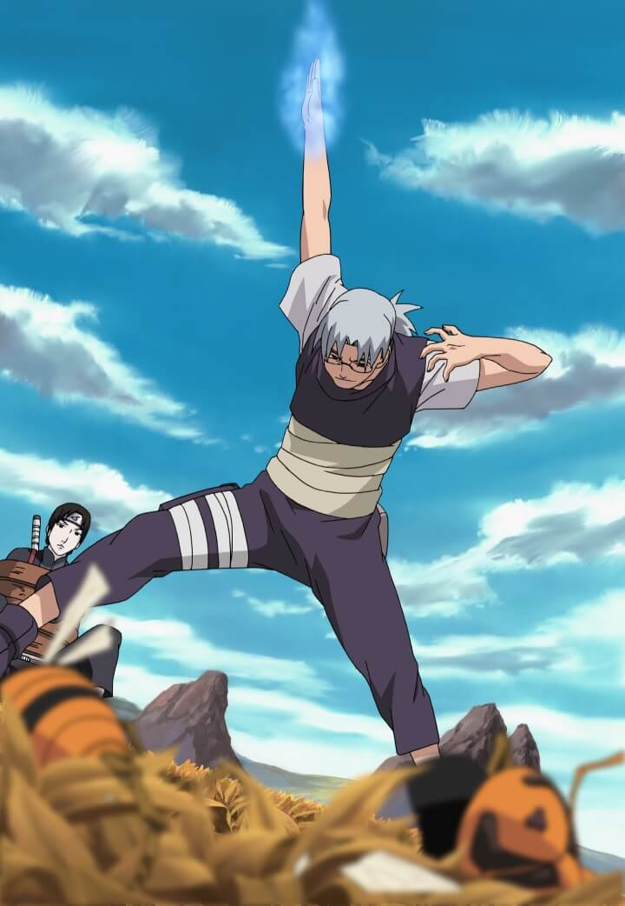
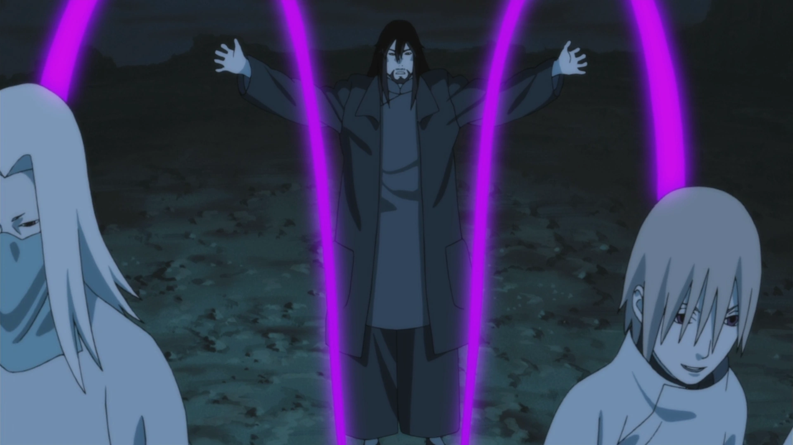

Основные медицинские
Медицинская
Забота о чакре
チャクラケア
Медицинская
Мягкое извлечение
柔和抽出
Медицинская

Паралич (Мед Стан)
麻痺
Медицинская

Ядовитое облако
毒雲
Медицинская
Мистическая ладонь
神秘の掌
Медицинская

Стимуляция клеток
細胞刺激
Медицинская

Нарушающий удар
破壊的打撃
Медицинская

Регенерация клеток
細胞再生
Медицинское тайдзюцу
Тайдзюцу

Стиль боя: Тайдзюцу Медика
医療体術
Тайдзюцу

Багровая морось
紅霧
Тайдзюцу

Расцветающая вишня
桜花
Тайдзюцу

Небесный болевой удар
天翔痛撃
Скальпель чакры
Скальпель
Стиль боя: Скальпель Чакры
チャクラメス
Скальпель
Нервный разрыв
神経断裂
Скальпель

Перекрёстный разрез
交差斬り
Ролевые
Ролевая

Инверсивная техника мистической ладони
逆神秘の掌
Ролевая

Камао Бьякуган Буттай Но Джутсу
解剖白眼物体の術